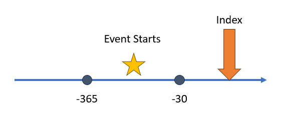
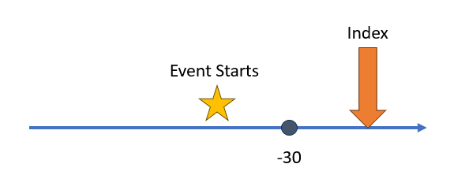
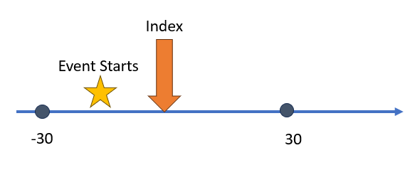
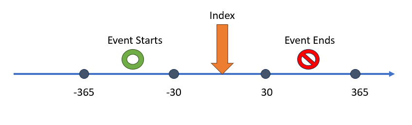

Intro
Capr allows users to build OHDSI cohort definitions in R
outside of ATLAS. Capr, like ATLAS, uses the same
underlying software circe-be to compose the cohort logic
into an actionable query. Therefore we must understand sub-components of
the cohort definition, in order to properly apply them to our cohort
construction. There are three main sub-components that drive building of
the cohort logic: 1) query, 2) criteria and 3) group. In this vignette,
we will describe the purpose of each sub-component and demonstrate the
Capr commands to invoke these structures.
Query
Definition
The query is a circe-be construct that defines
which concepts to extract from which domain table in the OMOP CDM. In
basic terms it is finding the persons that have a particular code in the
data. Through a more technical lens, the query is supplying the
WHERE and FROM logic in portions of
the SQL script. Ultimately the logic we construct in Capr
or ATLAS render a standardized SQL script that finds persons in the
database, of which the query is vital in providing the code sets to
search from. The query will be found all over the cohort
definition. Whenever we need to apply a concept set, it will be through
a query. In Capr the query function is
specified based on the domain tables available in the CDM. The table
below provides the mapping between the OMOP domain and the the
Capr function call.
| OMOP Domain | Capr Function |
|---|---|
| DrugExposure | drugExposure |
| DrugEra | drugEra |
| ConditionOccurrence | conditionOccurrence |
| ConditionEra | conditionEra |
| ProcedureOccurrence | procedure |
| Measurement | measurement |
| VisitOccurrence | visit |
| Observation | observation |
| Death | death |
Example
A simple example of how to use a query in Capr can be
seen below:
t1dConceptSet <- cs(descendants(195771), name = "T1D")
t1dQuery <- conditionOccurrence(t1dConceptSet)With our query we can apply this in a variety of places within the cohort definition. Below we give an example of a cohort of persons starting on metformin as our index event, where they could not have been diagnosed with Type 1 Diabetes any time prior.
metforminConceptSet <- cs(descendants(1503297), name = "metformin")
t1dConceptSet <- cs(descendants(195771), name = "T1D")
metforminCohort <- cohort(
entry = entry(
# metformin drug query as index event
drugExposure(metforminConceptSet, firstOccurrence()),
observationWindow = continuousObservation(priorDays = -365, postDays = 365L),
primaryCriteriaLimit = "All"
),
attrition = attrition(
'noT1d' = withAll(
exactly(
x = 0,
# query for t1d occurrence to exclude patients
query = conditionOccurrence(t1dConceptSet),
aperture = duringInterval(
startWindow = eventStarts(a = -Inf, b = 0, index = "startDate")
)
)
)
),
exit = exit(
endStrategy = observationExit(),
censor = censoringEvents(
#exit based on observence of t1d condition
# query for t1d occurrence for censor
conditionOccurrence(t1dConceptSet)
)
)
)Notice that the query is applied all over this cohort definition. The metformin query sets the concept set to use as the index event. The Type 1 Diabetes (T1D) query sets the attrition of the patients identified at index who should be excluded for having the condition. The T1D query also sets the exit from cohort. The cohort ends when the person has no more observation time in the database or they have been diagnosed with T1D. Remember the query is infusing the concept sets into the cohort logic based on which domain to search for codes in person healthcare records.
Attributes
The query is often contextualized by an attribute. For
example in the cohort above, we are searching for metformin in the drug
exposure table given it has occurred for the first time in the person
history. The attribute is a object that modifies queries by filtering
records based on the presence of another parameter. Attributes can be
based on person information (such as gender, race, or age), time based
(observation at a certain time window), domain based (presence of a code
in a different column of the same domain), or event based (based on the
observation of another event occurring). We will go into more details on
different attributes in a different vignette. In Capr as
many attributes can be attached within the query after providing the
concept set. Example below:
t1dConceptSet <- cs(descendants(195771), name = "T1D")
maleT1D <- conditionOccurrence(t1dConceptSet, male())
maleT1D18andOlder <- conditionOccurrence(t1dConceptSet, male(), age(gte(18)))
maleT1D18andOlderFirstDx <- conditionOccurrence(
t1dConceptSet, male(), age(gte(18)), firstOccurrence())One special type of attribute is a nested query. This construct is more complex and requires understanding of the criteria and group objects. We will return to this idea later in this vignette.
Criteria
Definition
A criteria object is one that enumerates the presence or absence of an event within a window of observation relative to an index point. The index point may be the entry event of the cohort definition. It could also be a prior event if we are building a nested query. The purpose of this object is to count whether a person has experienced certain events that would either include or exclude them from the cohort. Its easiest to show a criteria using a figure. Say relative from index we want to see two exposures of a drug within 365 days and 30 days before index. Those that fit that criteria remain in the cohort, those that do not are excluded from the cohort. See the figure below as an example:

When building a criteria object the user needs: 1) a query, 2) an operator that specifies the number of times a query is observed (occurrences), and 3) a time window which we call the aperture. Using the figure as an example, think of the stars as the query, the number of stars as the occurrences, and the box as the aperture. We could orient this idea around the index event in a variety of different ways.
Example
With this definition in mind, let us build an example of a criteria object that reflects the image above.
atenololConceptSet <- cs(descendants(1314002), name = "atenolol")
atenololCriteria <- atLeast(
x = 2,
query = drugExposure(atenololConceptSet),
aperture = duringInterval(
startWindow = eventStarts(a = -365, b = -30, index = "startDate")
)
)This criteria specifies that we must observe at least 2 drug
exposures of atenolol within 365 days and 30 days before the index start
date. By itself, a criteria makes little sense. It must sit
within the context of the entire cohort definition, where an index event
has been specified. In Capr the criteria object is
called in three ways: atLeast, atMost and
exactly. The criteria object in Capr
is contextualized by the number of occurrences of the query for its
function call. If we wanted to have exactly 2 drug exposures of atenolol
or at most 2 drug exposures they can be done as shown below.
atenololConceptSet <- cs(descendants(1314002), name = "atenolol")
atenololCriteriaA <- exactly(
x = 2,
query = drugExposure(atenololConceptSet),
aperture = duringInterval(
startWindow = eventStarts(a = -365, b = -30, index = "startDate")
)
)
atenololCriteriaB <- atMost(
x = 2,
query = drugExposure(atenololConceptSet),
aperture = duringInterval(
startWindow = eventStarts(a = -365, b = -30, index = "startDate")
)
)Aperture
An important part of the criteria object is providing the
temporal context to enumerating the occurrences of the query. In
Capr we term this interval relative to index as the
aperture. It is the opening in the patient timeline at which we are
enumerating the event of interest. An aperture can view when an event
starts and when the event ends. For both event start and event end, we
define a window for which the event is observed. Below we illustrate a
few examples of building an aperture and then show the corresponding the
Capr code.
 In this first example we
are observing when an event starts between time of 365 to 30 days before
the index start date. To build this aperture we use the following
Capr code:
aperture1 <- duringInterval(
startWindow = eventStarts(a = -365, b = -30, index = "startDate")
)Notice that we define the anchor for our index, either the index start date or the index end date. More times than not this will be the index start date.
 This next
example is similar to the first, however now we have an unbounded event
window. In this case the event start must be between any time before and
30 days before the index start date. In Capr we can always
create an unbounded event window by using the Inf operator
in our code, as shown below.
aperture2 <- duringInterval(
startWindow = eventStarts(a = -Inf, b = -30, index = "startDate")
) Our next example
provides an instance where we want our event window to utilize future
time. Normally we want to observe an event prior to index. On occasion
we can allow for an event to take place after index. The
Capr code to build this aperture is shown below:
aperture3 <- duringInterval(
startWindow = eventStarts(a = -30, b = 30, index = "startDate")
) Our final example
shows a scenario when we want the aperture to be constrained by both a
start window and end window. The end window is considering observation
of the end of the event. Say for example the event era starts with an
exposure to a drug and end is when the person stops taking the drug. If
the interest is the full time the person was encountering this medical
event we need to create both a start and end window in the aperture. The
Capr code below would replicate the concept from the
figure.
aperture4 <- duringInterval(
startWindow = eventStarts(a = -365, b = -30, index = "startDate"),
endWindow = eventEnds(a = 30, b = 365, index = "startDate")
)An aperture has two more potential toggles: a) restrict event to the
same visit and b) allow events outside the observation period. By
default these options are toggled as FALSE, so they do not
need to be defined in the Capr code unless made
TRUE. These are more advanced options in cohort building.
To use the we add this to aperture example 4 to show a full set of
options for an aperture in Capr:
aperture5 <- duringInterval(
startWindow = eventStarts(a = -365, b = -30, index = "startDate"),
endWindow = eventEnds(a = 30, b = 365, index = "startDate"),
restrictVisit = TRUE,
ignoreObservationPeriod = TRUE
)Group
Definition
A group object is one that binds multiple criteria and
sub-groups as a single expression. This is a very powerful construction
because it allows us to build all sorts of complexity in our cohort
definition. A group must have an operator informing how many
criteria must be TRUE in order for the person to
enter the cohort. In Capr the options available to build a
group are: withAll, withAny,
withAtLeast and withAtMost. The functions are
meant to be intuitive in terms of logic building. withAll
indicates all the criteria must be TRUE for the person to
remain in the cohort. withAny indicates any one of the
criteria needs to be TRUE. The functions
withAtLeast and withAtMost require an integer
to determine how many criteria must be TRUE.
Example
To show the idea of a group let us consider a very
complicated cohort, like the PheKB
T2D case algorithm. To consider a person to be a case of T2D, any
one of 5 pathways needs to be TRUE.
t2dAlgo <- withAny(
# Path 1: 0 T2Dx + 1 T2Rx + 1 abLab
withAll(
exactly(0,
t2d,
duringInterval(startWindow = eventStarts(-Inf, 0))
),
atLeast(1,
t2dDrug,
duringInterval(startWindow = eventStarts(-Inf, 0))
),
withAny(
atLeast(1,
abLabHb,
duringInterval(startWindow = eventStarts(-Inf, 0))
),
atLeast(1,
abLabRan,
duringInterval(startWindow = eventStarts(-Inf, 0))
),
atLeast(1,
abLabFast,
duringInterval(startWindow = eventStarts(-Inf, 0))
)
)
),
#Path 2: 1 T2Dx + 0 T1Rx + 0 T2Rx + 1 AbLab
withAll(
atLeast(1,
t2d,
duringInterval(startWindow = eventStarts(-Inf, 0))
),
exactly(0,
t1dDrug,
duringInterval(startWindow = eventStarts(-Inf, 0))
),
exactly(0,
t2dDrug,
duringInterval(startWindow = eventStarts(-Inf, 0))
),
withAny(
atLeast(1,
abLabHb,
duringInterval(startWindow = eventStarts(-Inf, 0))
),
atLeast(1,
abLabRan,
duringInterval(startWindow = eventStarts(-Inf, 0))
),
atLeast(1,
abLabFast,
duringInterval(startWindow = eventStarts(-Inf, 0))
)
)
),
#Path 3: 1 T2Dx + 0 T1Rx + 1 T2Rx
withAll(
atLeast(1,
t2d,
duringInterval(startWindow = eventStarts(-Inf, 0))
),
exactly(0,
t1dDrug,
duringInterval(startWindow = eventStarts(-Inf, 0))
),
atLeast(1,
t2dDrug,
duringInterval(startWindow = eventStarts(-Inf, 0))
)
),
#Path 4: 1 T2Dx + 1 T1Rx + 1 T1Rx|T2Rx
withAll(
atLeast(1,
t2d,
duringInterval(startWindow = eventStarts(-Inf, 0))
),
atLeast(1,
t1dDrug,
duringInterval(startWindow = eventStarts(-Inf, 0))
),
atLeast(1,
t1dDrugWT2Drug,
duringInterval(startWindow = eventStarts(-Inf, 0))
)
),
#Path 5: 1 T2Dx + 1 T1Rx + 0 T2Rx + 2 T2Dx
withAll(
atLeast(1,
t2d,
duringInterval(startWindow = eventStarts(-Inf, 0))
),
atLeast(1,
t1dDrug,
duringInterval(startWindow = eventStarts(-Inf, 0))
),
exactly(0,
t2dDrug,
duringInterval(startWindow = eventStarts(-Inf, 0))
),
atLeast(2,
t2d,
duringInterval(startWindow = eventStarts(-Inf, 0))
)
)
)Each pathway is complex and require multiple criteria to determine a T2D case. The group allows us to bundle multiple ideas together to build one complex expression.
Notes
Now that we have introduced the criteria and group,
there are a few important comments on how these objects are used within
circe-be.
1) Criteria must be placed within a group
A criteria can not be used on its own, it must be wrapped in a group. Even if only one criteria is needed, still wrap it in a group. An example would be:
noT1d <- withAll(
# criteria: no t1d prior
exactly(
x = 0,
query = conditionOccurrence(t1dConceptSet),
aperture = duringInterval(
startWindow = eventStarts(a = -Inf, b = 0, index = "startDate")
)
)
)
# wrap this in a group withAllFurther to this point, a single attrition rule is a group.
The example of noT1d above would be a single rule in the
cohort attrition. This is how we would apply it:
cohort <- cohort(
entry = entry(
# index event....
),
attrition = attrition(
'noT1d' = withAll(
exactly(
x = 0,
# query for t1d occurrence to exclude patients
query = conditionOccurrence(t1dConceptSet),
aperture = duringInterval(
startWindow = eventStarts(a = -Inf, b = 0, index = "startDate")
)
)
)
),
exit = exit(
#cohort exit....
)
)2) Groups may contain groups
A group may contain more groups as part of the same object. We saw this in the PheKB T2D example where one path required an abnormal lab. In the definition there are 3 types of abnormal labs: random glucose, fasting glucose and HbA1c. Any one of these three could be abnormal as part of path 1 of the case algorithm. To build this we need a group within a group.
# Path 1: 0 T2Dx + 1 T2Rx + 1 abLab
path1 <- withAll(
exactly(0,
t2d,
duringInterval(startWindow = eventStarts(-Inf, 0))
),
atLeast(1,
t2dDrug,
duringInterval(startWindow = eventStarts(-Inf, 0))
),
withAny(
atLeast(1,
abLabHb,
duringInterval(startWindow = eventStarts(-Inf, 0))
),
atLeast(1,
abLabRan,
duringInterval(startWindow = eventStarts(-Inf, 0))
),
atLeast(1,
abLabFast,
duringInterval(startWindow = eventStarts(-Inf, 0))
)
)
)3) Nested criteria are groups
Previously we mentioned a special kind of attribute called a nested
criteria (also known via ATLAS as a correlated criteria). The idea of a
nested criteria is that the index event is based on a particular concept
set expression as opposed to the entry event of the cohort definition.
For example, we want to build a cohort based on a hospitalization due to
heart failure. In this case a person is counted in the cohort if they
have first an inpatient visit given that a heart failure (HF) diagnosis
has occurred around the time of the inpatient visit. In
Capr a nested attribute uses the same syntax as a
group with a prefix of nested-, as shown in the
example below. The enumeration of the criteria is now indexed
based on the inpatient visit rather than the entry event of the cohort
definition.
ipCse <- cs(descendants(9201, 9203, 262), name = "visit")
hf <- cs(descendants(316139), name = "heart failure")
query <- visit(
ipCse, #index
#nested attribute
nestedWithAll(
atLeast(1,
conditionOccurrence(hf),
duringInterval(
startWindow = eventStarts(0, Inf, index = "startDate"),
endWindow = eventStarts(-Inf, 0, index = "endDate")
)
)
)
)Concluding Remarks
For more information on sub-components of a cohort definition via
circe-be, users should watch the videos created by
Chris Knoll outlining these ideas. while these videos utilize ATLAS,
Capr follows the same principles.